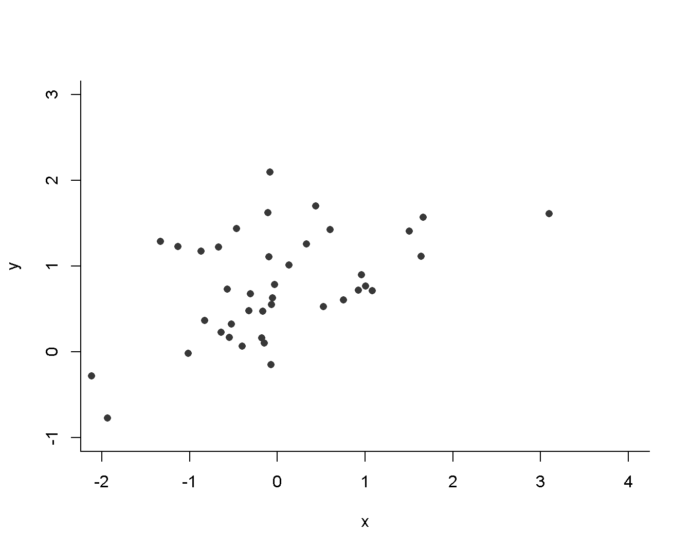
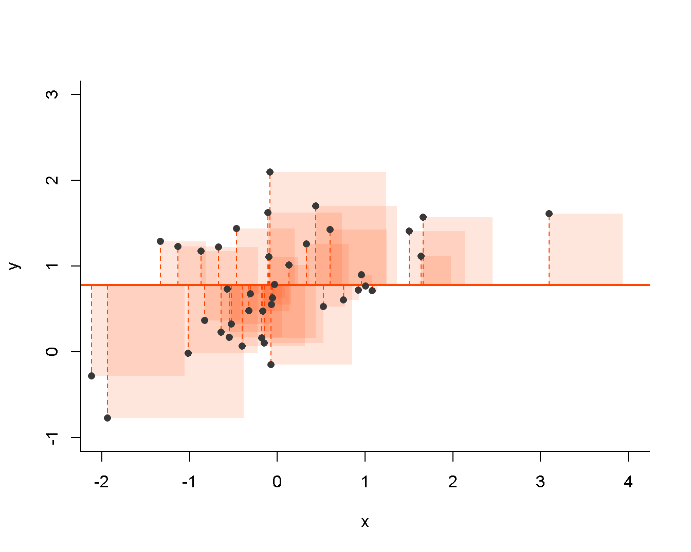
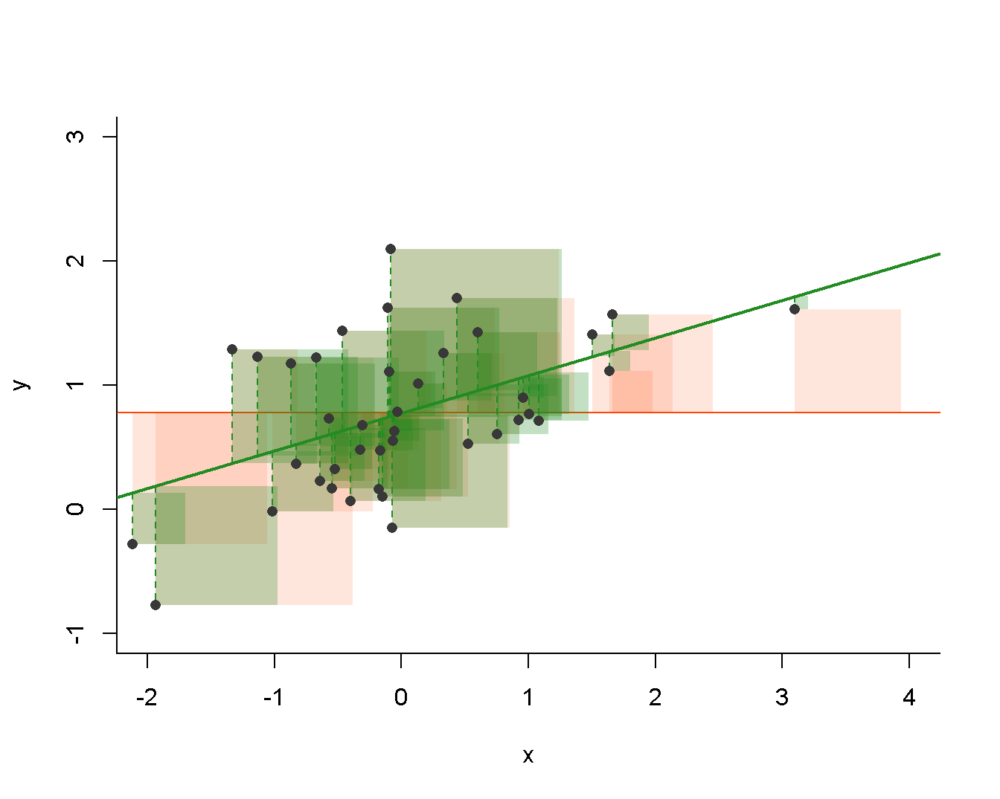
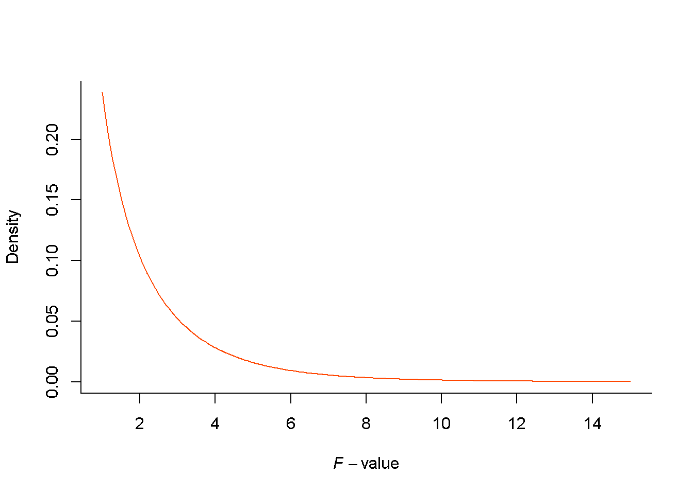
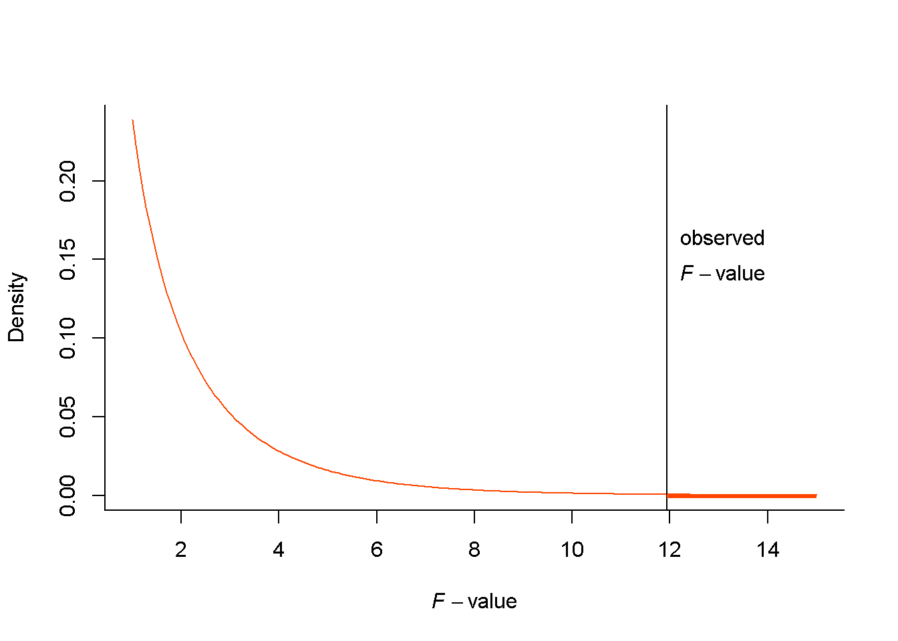

By now, you’re probably having nightmares involving total, residual, model, observed, explained, and who knows what other kinds of variance. This explainer gives a detailed and step-by-step account of what these all mean, how they relate to Sums of Squares, the F-test (anova()), and model fit.
Let’s start simple…
In Lecture 2 we talked about how variance is a measure of spread of a single variable. We also said that it is calculated by taking the distance of each datapoint from the mean of the variable, squaring it, adding those squares up, and dividing by \(n-1\). The added squared deviations from the mean are referred to as the, by now familiar, Sum of Squares:
\[SS = \sum_{i=1}^n(x_i-\bar{x})^2,\] where \(\bar{x}\) is the mean of our variable and \(x_i\) is any given observation.
This sum of squares is then divided by \(n-1\). Now, you know the name for the sum of something divided by its n – it is the mean. The \(n-1\) is used instead for reasons having to do with estimating based on a sample. It is known as the degrees of freedom. So by dividing SS by its degrees of freedom, we get the estimate of the mean of SS, the Mean Square. This is what variance is:
\[var(x) = \frac{\sum_{i=1}^n(x_i-\bar{x})^2}{n-1} = \frac{SS}{df} = MS\]
All good! Now, in Lecture 6, we talked about different kinds of sums of squares (total, model, residual) we work with when assessing the fit of a linear regression model. So how do these relate to variance?
To answer this question, we need to go back to the statement made in Lecture 4 that everything, including the mean is a linear model. In particular, the mean is the intercept only, or the null model. To visualise this, let’s create two correlated variables and plot them against each other:
x <- scale(rnorm(40))
# create outcome variable using a linear model equation
# y = intercept + slope * x + noise
y <- scale(3.15 + 1.74 * x + rnorm(40, sd = 2), F)
plot(x, y, bty = "l", pch = 16, col = "grey22", xlim = c(-2, 4), ylim = c(-1, 3))
The mean of our y variable is around 0.77. Let’s fit and visualise the null model to convince ourselves that it is really just the mean:
m_null <- lm(y ~ 1)
summary(m_null)##
## Call:
## lm(formula = y ~ 1)
##
## Residuals:
## Min 1Q Median 3Q Max
## -1.55031 -0.42073 -0.05042 0.45813 1.32206
##
## Coefficients:
## Estimate Std. Error t value Pr(>|t|)
## (Intercept) 0.77449 0.09808 7.897 1.3e-09 ***
## ---
## Signif. codes: 0 '***' 0.001 '**' 0.01 '*' 0.05 '.' 0.1 ' ' 1
##
## Residual standard error: 0.6203 on 39 degrees of freedomplot(NULL, bty = "l",
xlim = c(-2, 4), ylim = c(-1, 3), xlab = "x", ylab = "y")
abline(m_null, col = "orangered", lwd = 2)
# dashed residual lines
for (i in seq_along(y)) {
lines(rep(x[i], 2), c(mean(y), y[i]), col = "orangered", lty = 2)
}
## squares
#
# for rectangles, we need 2 x and 2 y coordinte
# x for right and left (vertical) sides of the rectangle
# y for top and bottom (horizontal) sides
rect(x, # left sides of squares are given by x-coordinates of points
mean(y), # one horizontal side is given by regression line
# right sides of squares is x + distance of points to line
x + abs(resid(m_null)),
# 2nd horizontal is given by y-coordinates of points
y,
col = "#FF450022", border = NA)
points(x, y, pch = 16, col = "grey22")
The horizontal line is our null model. As you can see, it is parallel to the x-axis and intersects the y axis at \(\bar{y}\). In other words, it is the mean. The dashed orange lines are the deviations of each respective point from the mean, \(y_i - \bar{y}\)). And the squares are, well, the squares. If we added their areas up, we would get the sum of squares. And the average area of these squares is the mean square, AKA, variance. Let’s see:
devs <- y - mean(y)
sq <- devs^2
ss <- sum(sq)
ms <- ss / (length(y) - 1) # divide by n-1, AKA degrees of freedom
ms## [1] 0.3847815# compare to variance of y
var(y)## [,1]
## [1,] 0.3847815
Cool, so the mean square really is the variance. We have, however, discussed three mean squares in the lectures: total (MST), model (MSM), and residual (MSR). Which one is the one equal to variance of y then? Easy, it’s the total mean square!
However, you might also have noticed, that the dashed orange lines are also the model residuals. If this is not clear, revisit Lecture 6. It should then follow, that the squares are the squared residual, their sum is the residual sum of squares (SSR) and its average is the residual mean square (MSR).
But I just told you that var(y) is the MST and now I’m telling you it’s MSR. What is this devilry?! Well, bear in mind that the model we fitted is the null model, the worst possible model. This model captures no variance in the outcome variable whatsoever and therefore its residual variance is equal to the total variance of the outcome variable, MST = MSR.
Given that total variance can be portioned into model and residual variance (again, see Lecture 6 if this is not clear), we know that the variance explained by the null model (MSM) will be zero.
All of the information we calculated above can be accessed in R using the rather unfortunately named anova() function:
anova(m_null)## Analysis of Variance Table
##
## Response: y
## Df Sum Sq Mean Sq F value Pr(>F)
## Residuals 39 15.007 0.38478Df is out \(n-1\),Sum Sq is SSR, which - in the case of the null model - is equal to SSTMean Sq is MSR (here also MSR), i.e., var(y)The F- and p-values are missing because the F-test (more on that later) compares the assessed model to the null model (or another reference model). Since out current model is the null model, there’s no need to compare it to itself.
Let’s build a better model now, one that predicts y by x:
m1 <- lm(y ~ x)
summary(m1)##
## Call:
## lm(formula = y ~ x)
##
## Residuals:
## Min 1Q Median 3Q Max
## -0.9634 -0.3924 -0.1605 0.3669 1.3476
##
## Coefficients:
## Estimate Std. Error t value Pr(>|t|)
## (Intercept) 0.77449 0.08667 8.936 7.06e-11 ***
## x 0.30335 0.08777 3.456 0.00136 **
## ---
## Signif. codes: 0 '***' 0.001 '**' 0.01 '*' 0.05 '.' 0.1 ' ' 1
##
## Residual standard error: 0.5481 on 38 degrees of freedom
## Multiple R-squared: 0.2392, Adjusted R-squared: 0.2191
## F-statistic: 11.94 on 1 and 38 DF, p-value: 0.001364Let’s see what happens with our variance of y now:

The plot is a little busy but bear with me. The orange line is still the null model and the orange boxes still represent the squared residuals of the null model whose average is the total variance in y. The green line now represents our model m1 with an intercept of 0.77 and a slope of 0.3. The green squares are, you guessed it, the squared residuals of our model m1. Their sum is the SSR and their average is the MSM of the model. Because the green line is the line of best fit (in terms of ordinary least squares), we know that the residual variance is minimised in the model. Therefore, it must be smaller than the residual variance of any worse-fitting model – the null model including.
Let’s compare the null model to m1 to see that this is true:
anova(m_null, m1)## Analysis of Variance Table
##
## Model 1: y ~ 1
## Model 2: y ~ x
## Res.Df RSS Df Sum of Sq F Pr(>F)
## 1 39 15.007
## 2 38 11.418 1 3.5889 11.945 0.001364 **
## ---
## Signif. codes: 0 '***' 0.001 '**' 0.01 '*' 0.05 '.' 0.1 ' ' 1The output of the function when given two or more models is slightly different than when you only give it a single model, but all the essential information is still there. We have the formula for each of the compared models to remind us what it is we’re actually comparing. Then there’s the SS information for each one of the compared models. The first line should look familiar, as it pertains to our m_null. We don’t have the value of MSR but we can easily calculated as \(\frac{SS_R}{df_R} = \frac{15.007}{39} \approx 0.38\). To reiterate, this is the variance left unexplained by the null model and, since the null model explains no variance, it is the total variance in the outcome variable.
Let’s look at the second line now. Again, we have the residual degrees of freedom dfR and the SSR. We can check that the latter value is correct by doing the calculation ourselves:
# sum of squared model residulas
sum(resid(m1)^2)## [1] 11.41756All checks out!
Next, we have the model df. This is the number of regression coefficients in the model other than the intercept. In m1, we only have a single coefficient (the one for x) and therefore only 1 dfM. The number of dfR for a model is the number of dfR of the null model minus dfM (\(n-1-1 = 38\)). As you can see, SSR for m1 is smaller than that for m_null, which is what we set out to show!
Further to the right, there’s the SSM. From the lectures, you know that \(SS_M = SS_T - SS_R\), because the total variance can be divided into variance explained by the model and variance left unexplained. If we want to know the model mean square, we can just divide SSM by dfM:
\[MS_M = \frac{SS_M}{df_M} = \frac{3.5889}{1} = 3.5889\]
If we run anova() on just our m1, R will do this tricky calculation for us:
anova(m1)## Analysis of Variance Table
##
## Response: y
## Df Sum Sq Mean Sq F value Pr(>F)
## x 1 3.5889 3.5889 11.945 0.001364 **
## Residuals 38 11.4176 0.3005
## ---
## Signif. codes: 0 '***' 0.001 '**' 0.01 '*' 0.05 '.' 0.1 ' ' 1All these numbers are telling us is that, in our sample, m1 explains some of variance that m_null left unexplained (since it’s the null model, this is all of the variance in y). You should already know what’s coming…
Since, due to sampling error, we can sometimes get a sample in which a model explains some variance, even if, in the population, this model is no better than the null model, we need to know if the variance explained by our model is large enough for us to reject the null hypothesis. Remember that, when it comes to a model as a whole, the null hypothesis states that the fit of the model is no better than that of the null model. So how do we know the variance is big enough?
Persevere, oh reader…
What I described in the previous paragraph sounded awfully like null hypothesis significance testing, didn’t it? Well, it is exactly that! So, just like with all other NHST tests we’ve covered, we need to follow these simple steps:
Let’s follow them then…
So we want to know how good a model is in terms of the variance in the outcome variable it explains. As mentioned above, variance is just a sum of squares scaled by degrees of freedom and, as you surely recall from Lecture 4, sums of squares follow the \(\chi^2\)-distribution. We could thus use the variance explained as our statistic and the appropriate \(\chi^2\)-distribution as its sampling distribution to get the p-value, right?
Well, not quite. We also need to take into account the variance that was in the data to begin with or the variance that is left unexplained by the model. After all, a model explaining variance of, I don’t know, 2247.2 is a great fit, if the total variance in the outcome is 2317.9 but a pretty poor fit if the total variance is 571,000. For this reason, the statistic we are looking for has to be some kind of ratio. This gives us two good candidates:
\[\frac{explained\ variance}{total\ variance}\]
and
\[\frac{explained\ variance}{residual\ variance}\]
In both cases, we have a ratio of two sums of squares divided by their respective degrees of freedom:
\[\frac{explained\ variance}{total\ variance} = \frac{SS_M/df_M}{SS_T/df_T}\]
and
\[\frac{explained\ variance}{residual\ variance} = \frac{SS_M/df_M}{SS_R/df_R}\]
In the genre-defining Lecture 4, we talked about a distribution that arises as a ratio of two independent scaled \(\chi^2\)-distributed variables – the F-distribution.
Now, we could technically use either of these statistics but the availability of a theoretical distribution that we can use to get our p-values is a big advantage. It was even a bigger advantage back in the day before cheap computing power, when regression analysis and analysis of variance were developed.
You can probably guess that, while both of the statistics proposed above are ratios of two scaled \(\chi^2\)-distributed variables, the variables are only independent for one of them. If you think about the fact that \(SS_T = SS_M + SS_R\), it becomes apparent that model sum of squares can never be larger than the total sum of squares. Conversely SST can never be smaller than SSM. That means that knowing one of these values gives us some information about the possible values of the other, which is basically the definition of statistical dependence. With SSM and SSR, we don’t have this problem: both of them can take any non-negative value, no matter what the value of the other one is.
All this means is that we use the latter statistic because we know that it comes from an F-distribution. That is why we call it the F-statistic (or the F-value)! This is exactly the value that anova() outputs:
(ftest_m1 <- anova(m1))## Analysis of Variance Table
##
## Response: y
## Df Sum Sq Mean Sq F value Pr(>F)
## x 1 3.5889 3.5889 11.945 0.001364 **
## Residuals 38 11.4176 0.3005
## ---
## Signif. codes: 0 '***' 0.001 '**' 0.01 '*' 0.05 '.' 0.1 ' ' 1# model and residual SS, respectively
(ss <- ftest_m1$`Sum Sq`)## [1] 3.588916 11.417562# model and residual df, respectively
(df <- ftest_m1$Df)## [1] 1 38# MS_M and MS_R, equal to ftest_m1$`Mean Sq`
(ms <- ss/df)## [1] 3.5889157 0.3004621# F-value
(fval <- ms[1]/ms[2])## [1] 11.94465Cool, so now we have our test statistic and we also know that it comes from the F family of distributions. As you know, this family includes distributions of various shapes defined by degrees of freedom so we need to know which particular one to look at. That is because a given F-value will have different associated p-values under different distributions.
What are the degrees of freedom then? Well, since the F-statistic is a ratio of two SSs divided by their respective degrees of freedom, it is not surprising that the associated F distribution inherits the same dfs. Yes, the shape of an F- unlike a t- or a \(\chi^2\)-distribution is defined by two sets of dfs.
In our m1 example, the model and residual dfs are 1 and 38, respectively. This is what an F-distribution with these dfs looks like:
x_coord <- seq(1,15, length.out = 200)
plot(x_coord, df(x_coord, df[1], df[2]), type = "l", col = "orangered", bty = "l", xlab = expression(italic(F)-value), ylab = "Density")
This is the sampling distribution of the F-value under the null hypothesis, meaning that even if our model m1 is really no better than m_null when fitted to the population, this is the probability distribution of the various F-values we would get if we fitted the model to all samples of 40 observations.
All we need to do now is locate the statistic with respect to the distribution and…
Hope you now know by heart that the p-value is the probability of obtaining a value of a test statistic as extreme or more extreme as the one observed in the sample if the null is true. In the case of the F-test, it is the area below the distribution curve to the right of the observed value. In our case (with an F-value of 11.94):

The p-value in our case is then simply:
# the right hand side end of the distribution is the "upper tail"
pf(fval, df[1], df[2], lower.tail = FALSE)## [1] 0.001363984This is indeed the p-value that anova() gives us. It means that, if the null is true, the probability of getting an F-value of a model that is at least 11.94 in a sample of 40 is only about 0.001. Since it is less than the conventional .05, we deem the result unlikely under the null hypothesis and therefore reject the null. We then can claim that this model is a significantly better fit to the data than the intercept-only/null model, because it captures more variance in the outcome variable than just the best uninformed guess of \(\bar{y}\).
Have a look at the anova() output of the model once again and make sure you understand what the numbers mean and what the relationships between them are:
anova(m1)## Analysis of Variance Table
##
## Response: y
## Df Sum Sq Mean Sq F value Pr(>F)
## x 1 3.5889 3.5889 11.945 0.001364 **
## Residuals 38 11.4176 0.3005
## ---
## Signif. codes: 0 '***' 0.001 '**' 0.01 '*' 0.05 '.' 0.1 ' ' 1
The nice thing about the F-test is that it allows for the comparison of an arbitrary number of nested models, as long as they have been fit to the same data set (of the same size). To see how this works, let’s create a random variable x2, unrelated to our outcome and add it to our linear model:
x2 <- rnorm(length(y), 3)
cor(y, x2) # chance-level correlation## [,1]
## [1,] 0.09506859m2 <- update(m1, ~ . + x2)We can put all of our models into an anova() function to perform the F-test:
anova(m_null, m1, m2)## Analysis of Variance Table
##
## Model 1: y ~ 1
## Model 2: y ~ x
## Model 3: y ~ x + x2
## Res.Df RSS Df Sum of Sq F Pr(>F)
## 1 39 15.007
## 2 38 11.418 1 3.5889 11.6308 0.001582 **
## 3 37 11.417 1 0.0005 0.0015 0.969622
## ---
## Signif. codes: 0 '***' 0.001 '**' 0.01 '*' 0.05 '.' 0.1 ' ' 1Let’s break down what’s going on here. R tells us that we’re comparing 3 models, the intercept only model (Model 1), the simple regression model (Model 2), and the multiple regression model with 2 predictors (Model 3). The F-test table shows the comparisons of Model 2 against Model 1 and Model 3 against Model 2. Notice that SSR and dfR of a model become SST and dfT for the model below, making the F-value calculations possible. Thus, for Model 3, the values are:
\[F = \frac{SS_M/df_M}{SS_R/df_R} = \frac{(SS_T - SS_R)/df_M}{SS_R/(df_T - df_M)}\] \[F \approx \frac{(11.418 - 11.417)/1}{11.417/(38 - 1)} \approx \frac{0.0005/1}{11.417/37}\] \[F \approx \frac{0.0005}{0.309} \approx 0.0016\]
Convince yourself that this result is indeed the same as the one from the anova() output (within rounding error). While doing it, make sure you understand where those numbers come from.
The result of the F-test indicate that the amount of variance explained by x2 in addition to x1 is not large enough to be unlikely in a world where model m2 isn’t different from model m1, as the p-value is pretty close to 1. This makes sense because we designed the variable x2 to be unrelated to y.
Now, let’s look at the output of anova(m2):
anova(m2)## Analysis of Variance Table
##
## Response: y
## Df Sum Sq Mean Sq F value Pr(>F)
## x 1 3.5889 3.5889 11.6308 0.001582 **
## x2 1 0.0005 0.0005 0.0015 0.969622
## Residuals 37 11.4171 0.3086
## ---
## Signif. codes: 0 '***' 0.001 '**' 0.01 '*' 0.05 '.' 0.1 ' ' 1If you have a good look at this table and the one above, you will see that the numbers are the same. Some, like the null model residuals (AKA total variance) and dfs, are missing from this one, others are extra, like the mean square values. The principle is, however, the same. The x row shows the results of the F-test for the x predictor, which is the same as comparing the y ~ x model to the null model. The x2 row then tests the significance of the additive effect of x2, which is the same as comparing y ~ x + x2 to y ~ x. This is what we mean by incremental model fit in lectures.
To test your understanding of the F-test try answering these questions before you read of for the answers: What will anova(m_null, m2) do? How will the output differ from the one above?
OK, let’s see:
anova(m_null, m2)## Analysis of Variance Table
##
## Model 1: y ~ 1
## Model 2: y ~ x + x2
## Res.Df RSS Df Sum of Sq F Pr(>F)
## 1 39 15.007
## 2 37 11.417 2 3.5894 5.8161 0.006363 **
## ---
## Signif. codes: 0 '***' 0.001 '**' 0.01 '*' 0.05 '.' 0.1 ' ' 1What we’re doing here is pitting m2 directly against the null model, cutting out the m1 middleman. The difference between this f-test and the one produced by anova(m2) is that here, the model gets evaluated as a whole and not one predictor at a time. As a result, even though only one of the predictors accounts for a significant portion of the variance in y, the overall model is still an improvement over the null model.
To recap, the F-test is a good way of assessing whether a model is a significant improvement on a reference model (by default the null model). The test compares the variance in the outcome accounted for by the model to the variance left unexplained using the F-ratio (\(MS_M/MS_R\)). This ratio has a sampling distribution that follows the F-distribution with dfM and dfR degrees of freedom which allows us to assess the probability of a given amount of improvement in a sample if, in reality, there is no improvement. If the probability is sufficiently small (\(p \leq .05\)), then the model is a significantly better fit to the data than the reference model.
Easy peasy…